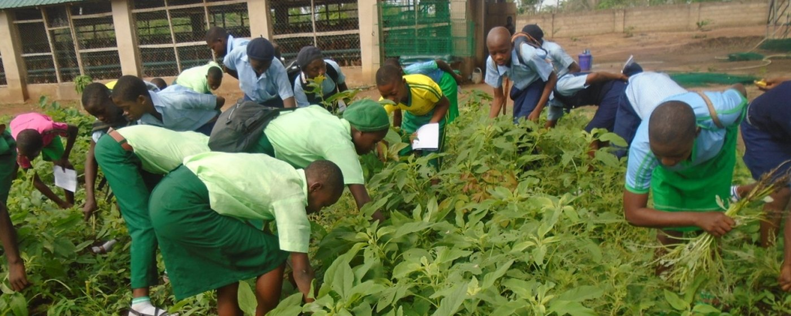
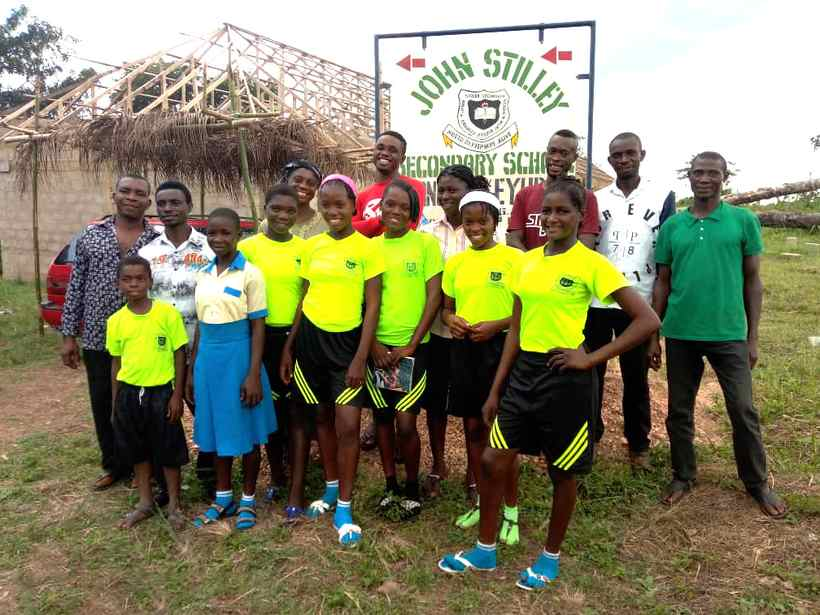
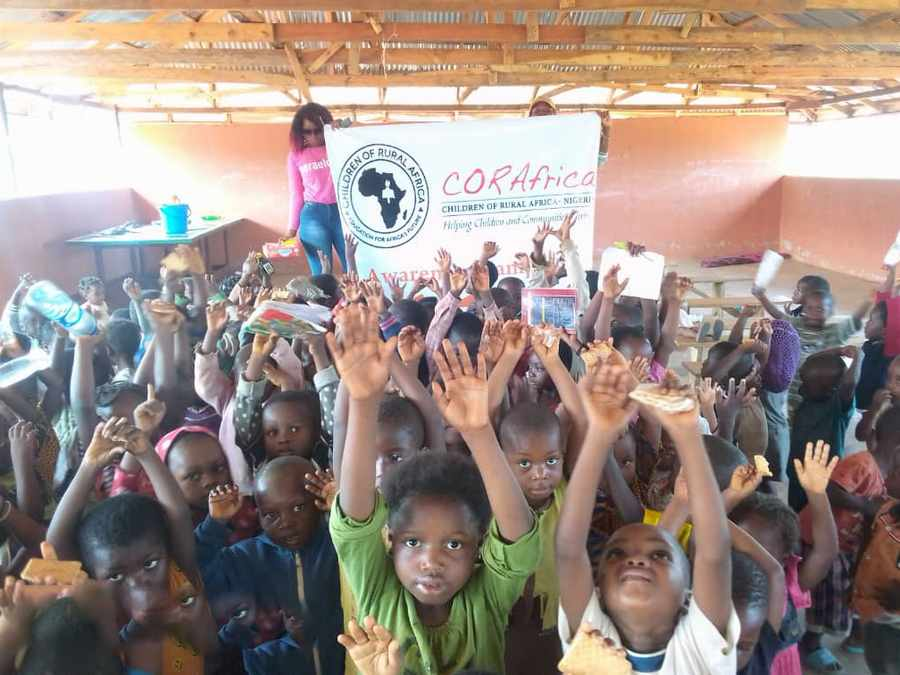
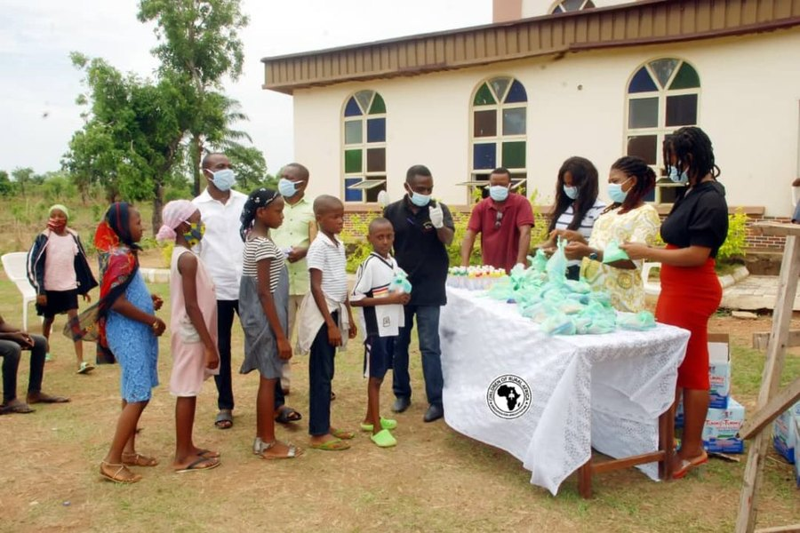

Education
Primary and secondary schools, built where no school exists, plus vocational and skills centres.


CORAfrica builds primary and secondary schools in rural Nigeria where none exist — then adds the clinic, the farm and the workshop that keep children coming back. Founded 2006. Working across Cross River and Benue States.
Twenty years on the ground
Independently reported — National Catholic Reporter, Vanguard, ThisDay
The Community Education Centre
Hunger, illness, and a family with no income take more children out of class than any exam does. So our model puts four things on one site, and treats them as one system rather than four programmes. Two centres are running today, at Mbube-Ogoja and Victoria-Ikom.
Primary and secondary schools, built where no school exists, plus vocational and skills centres.
A clinic on the school site, and care concentrated on a child’s first 1,000 days.
A demonstration farm that feeds the school and teaches the trade hands-on.
Soft loans so a parent can build a business and afford to keep a child in class.
Our schools

Victoria, Ikom — the only secondary school in its community

Adagom, Ogoja — for refugee children arriving from Cameroon

Idum-Mbube — school and orphanage, now run by the Diocese of Ogoja

Our founder
Fr. Peter Obele Abue conceived CORAfrica in 2006 while completing a PhD in International Development at Cornell. He holds a Master’s in Corporate Communication from Duquesne, and is Vicar General of the Catholic Diocese of Ogoja. The schools, clinics and farms he founds are handed over to be owned and run by his home diocese — the work is built to outlast him.
In the news
Support the work
CORAfrica is a registered 501(c)(3) in the United States, so gifts from US donors are tax-deductible. Give monthly, and we can plan.